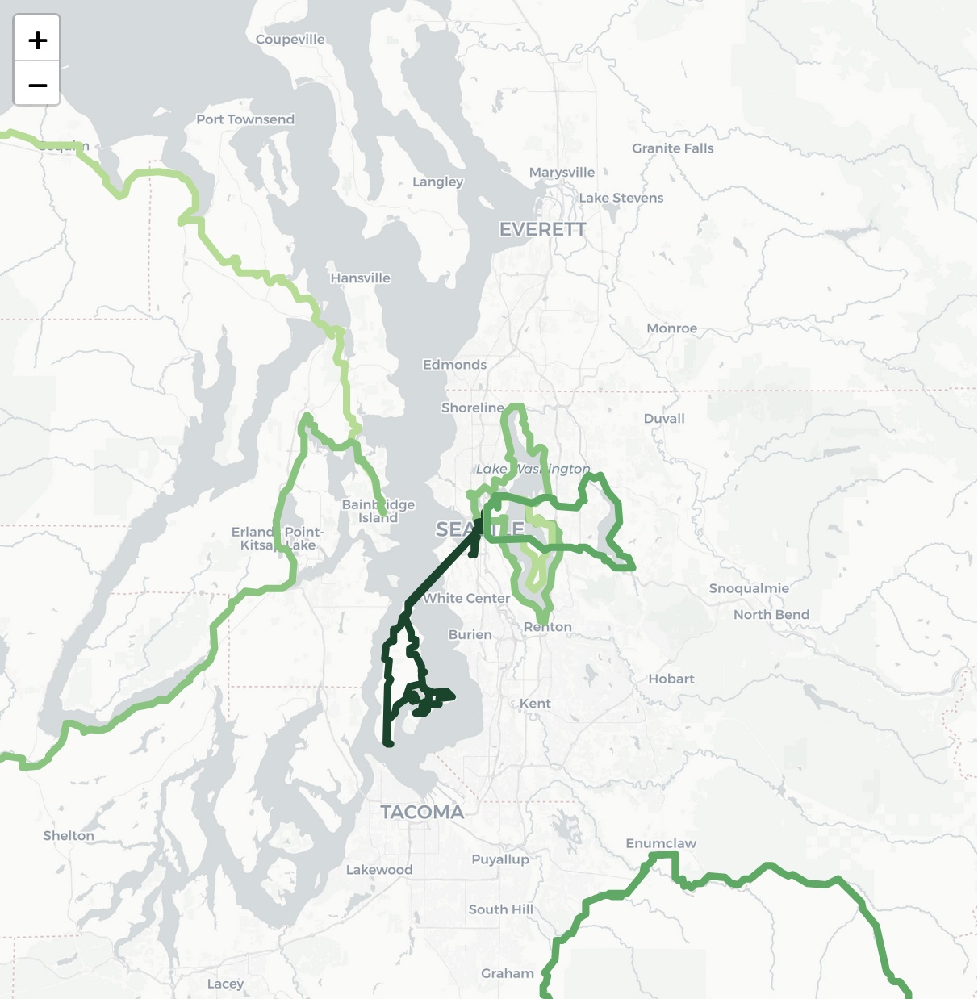
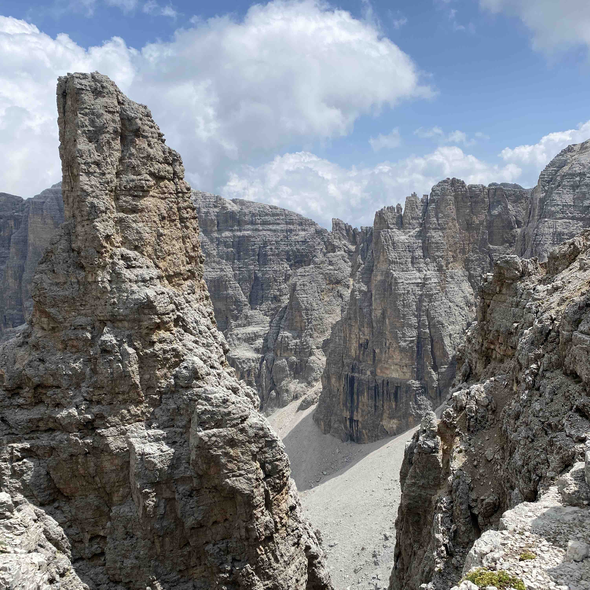
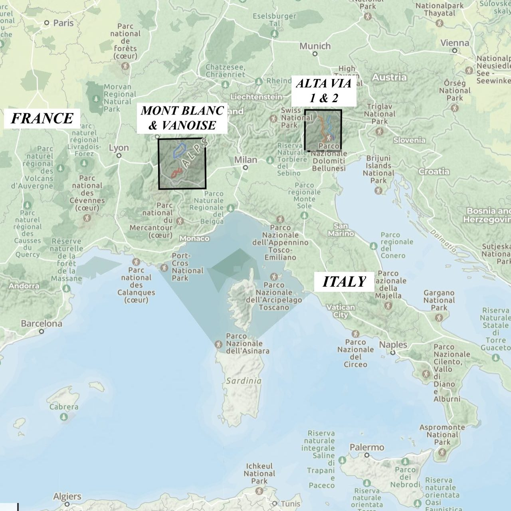
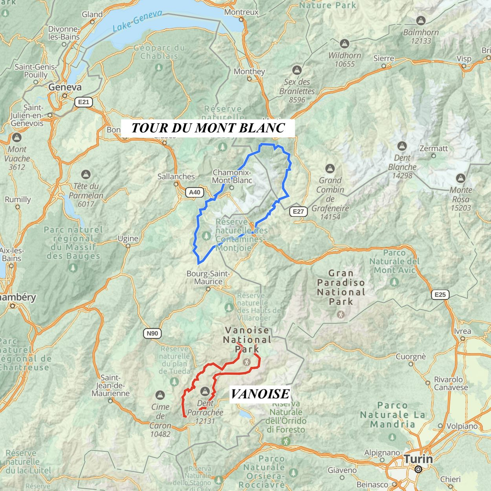
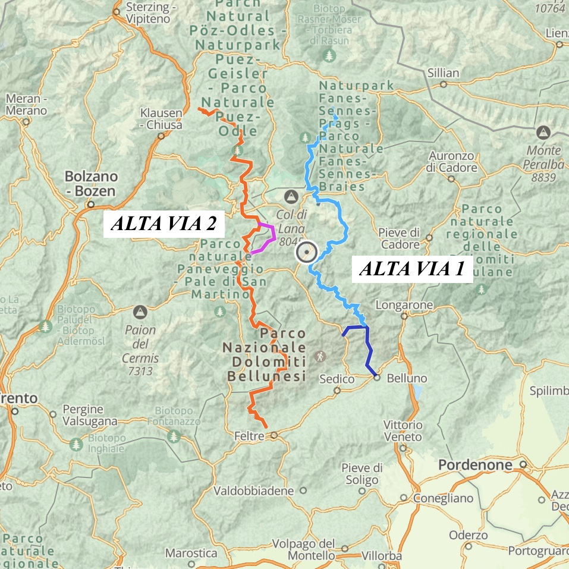
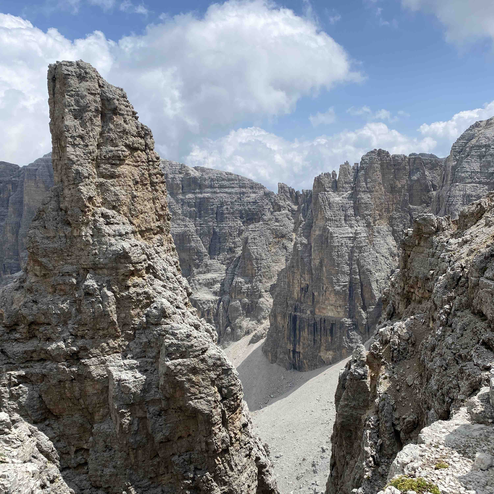
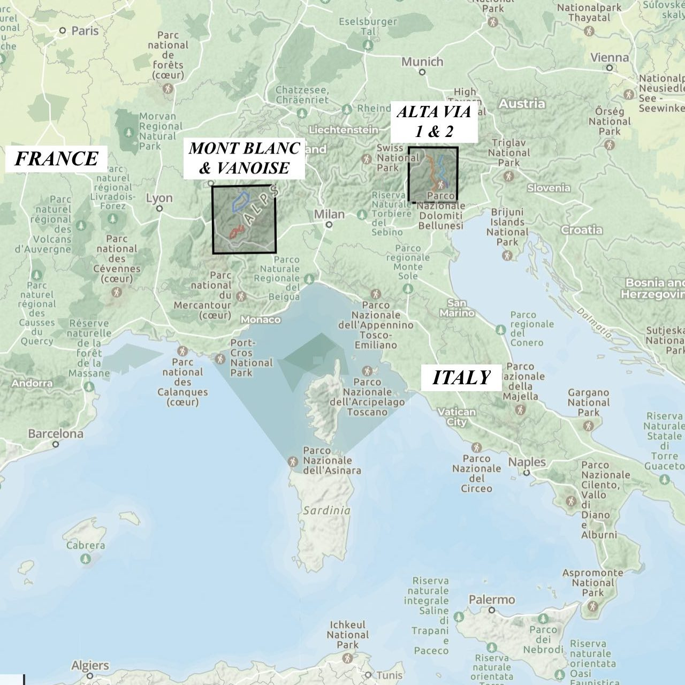
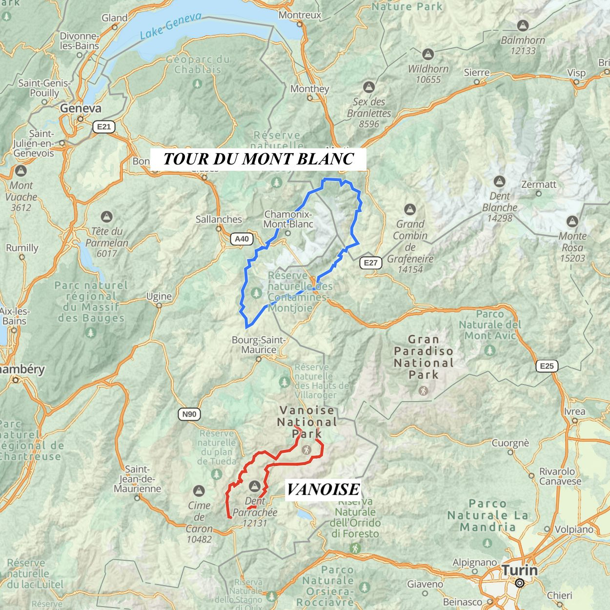
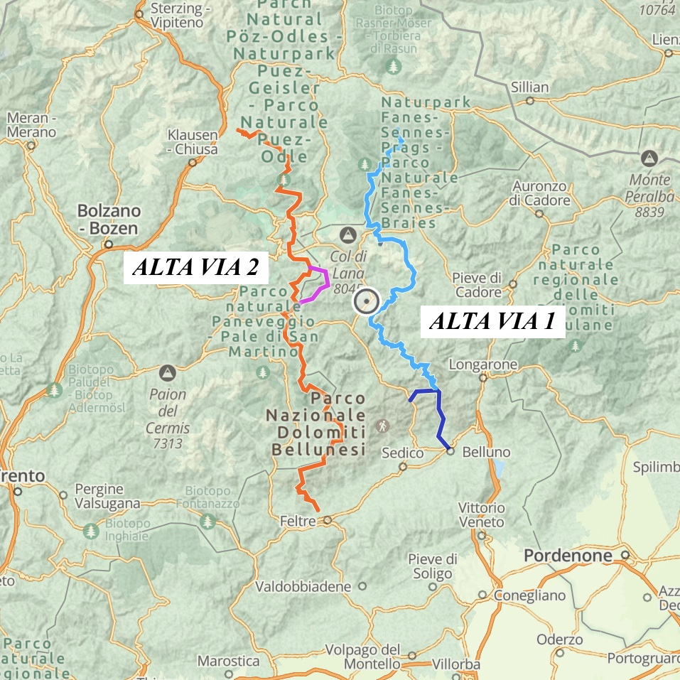

This past year, I moved to Seattle in large part to have access to the abundance of bike-packing routes within the Pacific Northwest. As I work my way across the Olympic/Cascades mountains and the islands of the Pudget Sound, I wanted to document my trips cartographically. This cycling map project uses python scrips to pull GPX data from the strava api and convert it into geojson. Those routes are then displayed using a leaflet map. Click through to explore my adventures by year.


 
